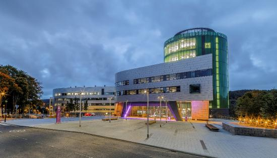
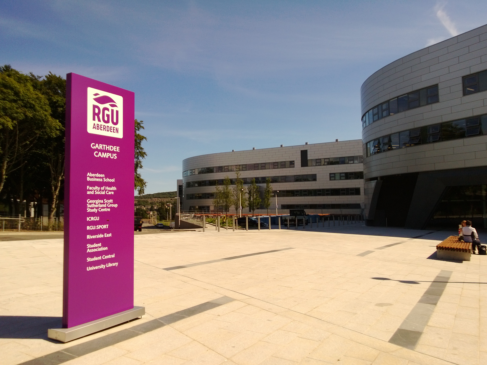

Why Study With Us?
The School of Computing Science and Digital Media courses develop skills and expertise for a wide range of Computing technologies and target applications. The School has an excellent reputation for its innovative and practical approaches to teaching and learning. For generations it has produced qualified professionals across a broad spectrum of technical careers with graduates in high profile, international roles. Our applied approach to the subject ensures our graduate employment rate remains one of the best in the UK. We have recently been recognised as the best new university in the UK for computing (Times Good University Guide 2009 and 2010). Our courses are recognised by the BCS – the Chartered Institute for IT. Strong links with industry ensure that courses are constantly updated plus many are introduced as a direct response to changes in the marketplace. Our world-class research is often in direct collaboration with industry, including major oil, pharmaceutical, and software companies.
The Best Courses
With students finding relevant employment after graduation, our courses successfully meet the needs of industry and commerce thanks to the input of external professionals and our experienced staff. Transferable skills gained in team-working, communication, presentation and other areas open doors in industry, as well as in research and development. Industrial projects and work placements ensure a fertile balance of professional experience and widely respected qualifications. Established links with further education colleges have been highly successful in offering a direct entry route to Robert Gordon University for students with the relevant knowledge and skills. If you are interested in studying computing at undergraduate level, there are a number of courses available to you. Our courses are designed to respond to the needs of industry so when you graduate you will have the skills you need to build a successful career.
The Latest on CSDM
Dieter Holvoet, Florian Peyron, Alexa Noel and Brent De Hauwere from RGU’s School of Computing Science and Digital Media travelled to Edinburgh this month to take part in the Scottish Universities’ Cyber Security Challenge. The Cyber Security Challenge is a series of national competitions, learning programmes, and networking initiatives designed to identify and inspire more EU citizens resident in the UK to become cyber security professionals. Established to bolster the national pool of cyber skills, it provides safe environments in which thousands of people can test and demonstrate their skills and showcases the spread of career opportunities for future cyber defenders. The competition in Edinburgh, which ran from October 1 to October 2, involved two days of cyber challenges where the RGU students pitted their coding and security skills against other universities, with one team crowned ‘Cyber University of the Year’. Brent De Hauwere, who is studying Computer Science at RGU, said: “On the first day we were challenged with a ‘Capture the Flag’ game which put all of our knowledge and skills to the test. We decrypted network packets, used SQL injection, applied reverse engineering, and much more.